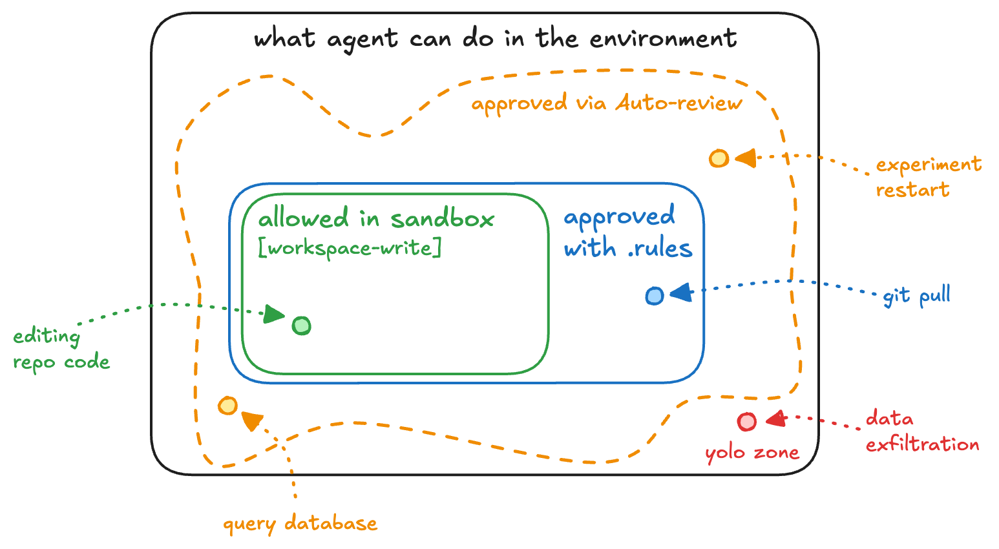

原文：Auto-review of agent actions without synchronous human oversight 来源：OpenAI Alignment | 2026-04-30 作者：Maja Trębacz, Sam Arnesen, Ollie Matthews, Dylan Hurd, Won Park, Owen Lin, Joe Gershenson
· · ·
Auto-review 为部署编码 agent 提供了更安全的默认选项，使用单独的 agent 来批准或拒绝越界行动。
上周我们在 Codex 中发布了 Auto-review。此前用户有两个选择：需要频繁人工批准的默认模式，和以牺牲监督为代价消除摩擦的完全访问模式。Auto-review 提供了替代路径——用单独 agent 的审查替代沙箱边界处的用户批准。
在 Auto-review 模式下，Codex 会话请求人工批准的频率比手动批准模式低约 200 倍，同时仍能拦截许多用户希望阻止的行动。大多数行动在沙箱内运行无需批准。对于需要审查的小部分，Auto-review 批准约 99%。即使 Auto-review 拒绝了一个行动，Codex 通常也能自行恢复，找到更安全的方式继续。

说明性部署快照：10,000 个行动中，9,280 个在沙箱内，720 个被 Auto-review 审查。其中 713 个被批准继续，7 个被拒绝（4 个通过更安全的替代方案继续，3 个停止并询问用户）。
· · ·
默认权限模式限制 Codex 只能读取文件、在预指定可写根目录下编辑、在边界内运行本地命令。超出这些限制的行动必须等待用户授权。这些限制让用户沮丧，经常使长时间运行的后台会话不可能。
这种沮丧创造了新风险：
python 开头的命令）· · ·
Auto-review 扩展了 Codex 无需人工干预能做的事情，同时仍阻止可能对用户或组织造成严重或不可逆伤害的行动。
到达沙箱边界时，Codex 可以请求升级以在沙箱外执行行动。在 Auto-review 中，一个单独的 Codex agent 评估这些请求，考虑用户意图、环境、安全策略和行动的可能影响。
角色分离很重要。主 agent 被优化来完成用户任务，这创造了将批准边界视为又一个需要克服的障碍的压力。Auto-review 有更窄的工作：决定提议的越界行动是否应该运行。
Auto-review 旨在阻止可能造成严重或难以逆转伤害的行动：外泄数据、暴露秘密、删除数据、削弱安全设置、运行不受信任的代码、或遵循来自不受信任内容的与用户指令冲突的指令。
Auto-review 使用 GPT-5.4 Thinking（低推理）。拒绝不仅仅说"不"——它给 Codex 一个理由和足够的信号来安全继续。在内部部署中，Codex 在被拒绝后继续并在超过一半的情况下成功找到可接受的解决方案。
· · ·
| 指标 | 值 |
|---|---|
| 可用性：升级行动的自动批准率 | 99.1% |
| 可用性：所有行动的有效批准率 | 99.93% |
| 安全：过度热心召回率 | 90.3% |
| 安全：Prompt 注入召回率 | 99.3% |
| 安全：MonitoringBench [Hard] 召回率 | 96.1% |
· · ·
Auto-review 不应被视为安全保证。在自动化和人工红队测试中，我们识别了 Auto-review 可能被误导批准命令的情况。此外，它不应被理解为防止模型 scheming 的机制。Auto-review 在升级点评估提议的沙箱外行动。一个策略性隐藏意图的模型仍可能产生看起来良性的升级请求，或在 Auto-review 永远看不到的沙箱内以某种方式行动。这些风险需要互补的监控和评估方法，包括思维链监控。
· · ·
我们应该追求一个未来，像 Codex 这样的 agent 可以被信任拥有与员工相同级别的权限。我们今天不在那个未来，Auto-review 模式可能不是那个未来所需的最终形态。Auto-review 模式是多方面的妥协：与传统安全系统相比，它牺牲确定性换取表达力；与完全访问模式相比，它牺牲速度换取安全。我们对齐工作的关键目标是导航这两个权衡。